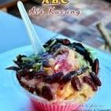

Ais Kacang

Bahan-bahan
Bahan asas
Ais kiub/ais kisar secukupnya, Kacang merah (rebus atau tin), Jagung manis (tin atau rebus sendiri), Cendol, Cincau (potong dadu).
Bahan tambahan (topping)
- Sirap ros
- Susu pekat manis
- Susu cair
- Kacang tanah (sangai dan tumbuk kasar)
- Sagu biji (masak dan warna ikut suka)
- Gula melaka cair (untuk rasa klasik, pilihan)
- Aiskrim (pilihan, seperti vanila atau durian)
Cara penyediaan
- Sediakan bahan-bahan:
- Susun bahan seperti kacang merah, jagung, cendol, dan cincau di dasar mangkuk besar.
- Masukkan ais kisar ke dalam mangkuk sehingga memenuhi mangkuk dan bentuknya seperti gunung.
- Siramkan dengan sirap ros, susu pekat manis, dan susu cair mengikut kesesuaian citarasa anda. Anda juga boleh menambah sedikit air gula Melaka cair untuk rasa tradisional.
- Taburkan kacang tanah tumbuk di atasnya, kemudian letakkan aiskrim jika suka.
Home